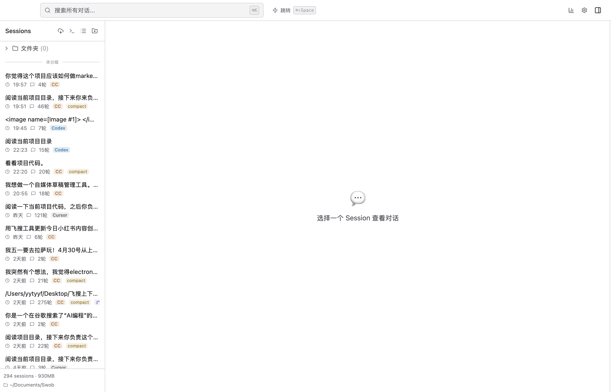

02 · CORE CONCEPT
Vault：会话是你的文件
Vault 是 Swob 的本地资料库边界。它不是某个云账号，也不是把源客户端目录据为己有。

它保存什么
每个会话以受管会话包存在，带有标记、派生 transcript、来源证据和组织元数据。SQLite 搜索索引可以重建；原始 harness transcript 与 Swob 转录都不应靠手工编辑来“修复”。
第一原则
原始记录是证据，Vault 是可管理、可备份的本地副本。浏览、整理与恢复都应保留这条边界。
你负责的两件事
- 把 Vault 放在你理解其同步/备份语义的位置。
- 不要手工移动单个会话包；在 Swob 里整理，才能记录可撤销事务。